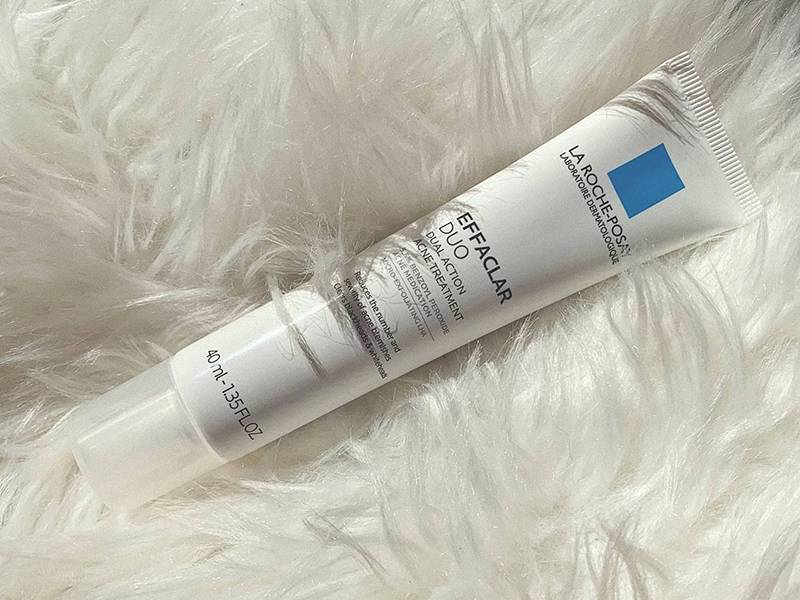

Adult Acne: What Causes It and How Can You Address It?
6-6-2021
One of the biggest skincare myths is that acne magically disappears once you’re no longer a teenager. During my teen years, I was lucky in that I rarely ever broke out. I thought I was home free until I turned 25 and acne suddenly became one of my top skin concerns. As it turns out, my story is not unique. “Adult acne is very common, especially in women at childbearing age, which is ages 20s to 40s,” says Candace Marino, a medical esthetician based in Los Angeles. So what causes adult acne and how do you treat it without relying on products marketed towards teens? Keep scrolling to find out.
“Acne is an intersection of genetics, hormonal driving forces and lifestyle,” says board-certified dermatologist and Hims & Hers advisor Dr. Sandy Skotnicki. “At puberty, some patients who have a genetic predisposition start to develop clogged pores resulting from an increase in hormonal influences, which drive sebum or oil production.” The clogged pores are the start of acne, which can then develop into papules, pustules and cysts.
Even though puberty is typically over by the time you reach your 20s, you can still experience hormonal fluctuations during your menstrual cycle, as well as before, during and after pregnancy. “Common areas for hormonal breakouts in women appear on the chin and jawline, and we tend to see more inflamed and cystic spots,” says Marino.
In addition to hormones, stress, diet and pore-clogging products and impurities can all contribute to breakouts. Further, if you were acne-prone as a teen, chances are that your skin is still acne-prone as an adult.
According to Dr. Skotnicki, “all acne is hormonally driven. When a child reaches puberty, this increase in hormonal activity drives acne. Adult acne occurs more commonly in women and is typically cyclical around the menstrual cycle.”
“During teenage years, hormone fluctuations can cause excess oil and sweat production leading to breakouts, and teens commonly experience larger blackheads and pustules,” says Marino. Comparatively, she says that adults often experience more inflamed, red acne and cystic spots. Luckily for teens, they typically have a high cell turnover rate that helps their skin heal faster. “This is why post-inflammatory acne marks tend to stick around on adults, and we see slower response to products and treatments,” she explains.
What can make treating adult acne trickier than teen acne, says Marino, is that adults may be dealing with pigmentation, dehydration and sensitivity, as well. All of these concerns should be taken into consideration when determining the best form of treatment.
Dr. Skotnicki notes that hormonal therapies are often the most effective way to treat acne in adults. “Topicals are less effective and include prescription Retin-A, azelaic acid, and dapsone,” she says “Chemical peels with glycolic, mandelic, lactic and other acids can improve adult acne, but they need to be done consistently.”
You should always consult with a board-certified dermatologist on a treatment plan that is effective, yet won’t exacerbate any other skin issues. “Getting on a routine that helps prevent and treat breakouts while keeping the skin hydrated is super important,” says Marino. Try incorporating a gentle cleanser that contains an acne-fighting ingredient like benzoyl peroxide. We love the CeraVe Acne Foaming Cream Cleanser, which includes 4% of the popular acne-fighting ingredient. For a non-drying spot treatment infused with benzoyl peroxide, check out the La Roche-Posay Effaclar Duo Acne Spot Treatment.
Other skincare ingredients Dr. Skotnicki recommends to look out for if you have adult acne include retinol, niacinamide, azelaic acid, glycolic acid, lactic acid and salicylic acid.
While hormonal acne can’t really be prevented, having a regular cleansing routine helps, and there are certain breakout triggers you can avoid. For example, Dr. Skotnicki notes that hair oils and non-comedogenic makeup and skincare products can cause flare-ups of acne. If adult acne is a concern, consult with a board-certified dermatologist to determine the best prevention plan for you and your personal skin concerns.